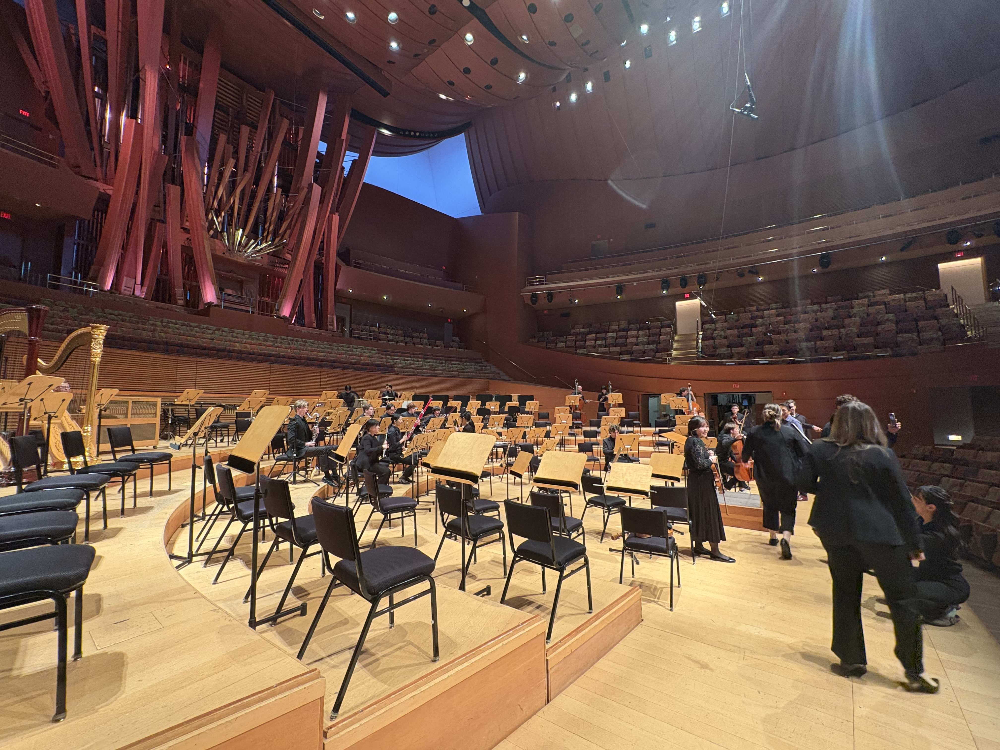
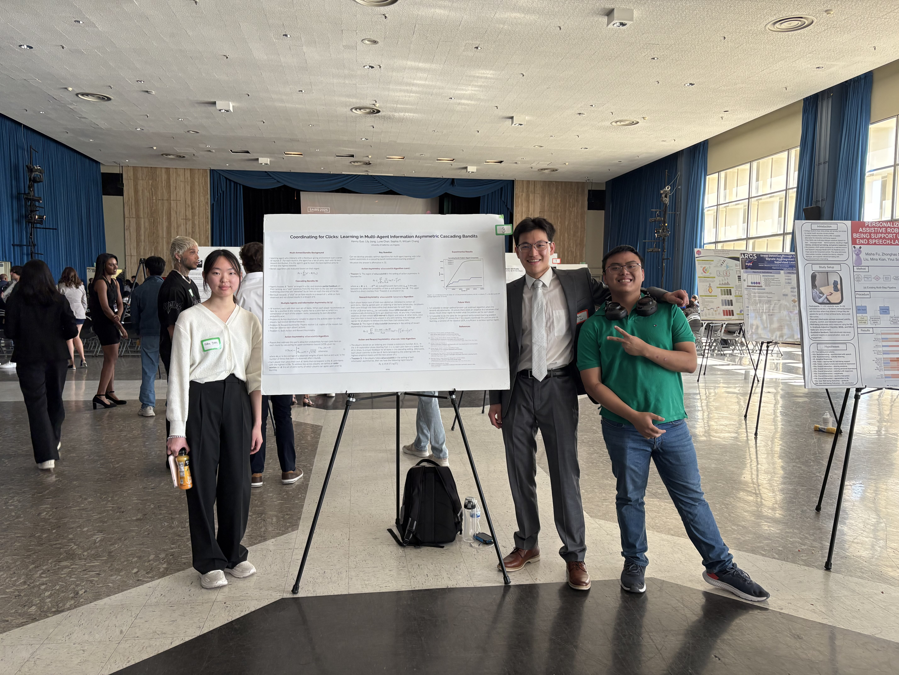

Blogs
2026
2025
Mahlerthon at Walt Disney Concert Hall · March 2, 2025
During Winter 2025, UCLA Philharmonia, along with USC Thornton and Colburn, was invited to perform as part of the LA Phil’s Mahlerthon.
I was fortunate enough to play first violin in Mahler’s Symphony No. 6 — big hammer included.

A view of the stage and the “Hurricane Mama” organ (looks like French fries). Southern California AI Research Showcase 2025 (SAIRS) · April 19, 2025
My friend Helen and I presented some of our recent work on multi-agent multi-armed bandits at a UCLA AI conference.
This was my first poster presentation, and it was great getting to talk with everyone from CS faculty to incoming UCLA first-years. I hope they found our work at least an \(\epsilon\) margin from boring.

A picture with Helen and me standing next to our poster (our friend Steve decided to pop in, as he often does). Economics Board of Visitors Meeting · April 28, 2025
During my final year at UCLA, I was fortunate to be funded by the UCLA Economics Board of Visitors’ Economics Research Fellowship.
Through the program, I conducted research with Professor Till von Wachter and the California Policy Lab on the Unemployment Insurance program and presented a snapshot of our work to the Board.
I met some really cool people through the program and learned a lot more about the different paths one can take in economics.
Presenting with the rest of the fellows. Summer at NERA and New York City · Summer 2025
During Summer 2025, I interned at National Economic Research Associates (NERA) in New York City in the Securities and Finance practice.
I wrote more about my experience here.
Misc.
UCLA Course Materials
If you’re a current UCLA math or econ student, I maintain an archive of some of my classwork and solutions here.
ScreenSketch
Many times during research meetings or when reading papers, I find myself in need of quick access to a sketching tool to show my collaborators my ideas or perform a quick derivation. Mac doesn’t have Paint, and I’m pretty particular about my tools and setup, so I mocked up a quick app for this.
I think it’s pretty easy-to-use, works with Sidecar Mirroring with an iPad and Apple Pencil, and would be helpful if you do research with others online or just want a general sketching tool to draw over your screen(s). Find the download here.
Important People
Friends
- Mario Truong
- Eric Wang
- polyethylene glycol (pegifenu)
- Helen Yuan
- Terrence Yu
- Toshi Hirasawa
- Koki Okumura
- Ann Zhou
- Fonda Hu
- Khang (Steve) Nguyen
- Matthew Hur
- Evan Cui
- Ethan Park
- David Rha
- Olivia Son
- Sydney Song
- Kian Mohsenzadeh
- Judd Baron
- Mihir Chathurvedula
- Jimmy Zhang
- Aarya Singh
- Catherine Kim
- Andrew Su
- Andy Wang
- Taro Iyadomi
- Lily Jiang
- Dongjin Hwang
If you’re a friend, would like to be added here, and/or have a website, let me know.
“Friend”
Reserved for more “unique” individuals :)